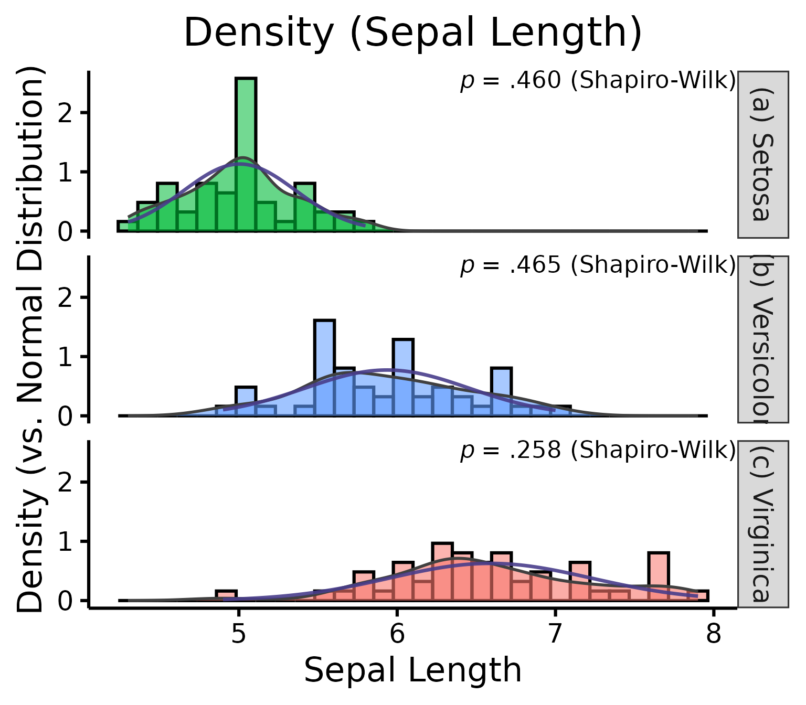

Quickly test linear regression assumptions
Rémi Thériault
December 25, 2020
Source:vignettes/assumptions.Rmd
assumptions.RmdBasic idea
I recently discovered a wonderful package for easily checking linear regression assumptions via diagnostic plots: the check_model() function of the performance package.
Let’s make a quick demonstration of this package first.
# Load necessary libraries
library(performance)
library(see)
# Note: if you haven't installed the packages above, you'll need to install them first by using:
# install.packages("performance") and install.packages("see")
# Create a regression model (using data available in R by default)
model <- lm(mpg ~ wt * cyl + gear, data = mtcars)
# Check model assumptions
check_model(model)
Wonderful! And efficient. However, sometimes, for different reasons, someone might want to check assumptions with an objective test. Testing each assumption one by one is kind of time-consuming, so I made a convenience function to accelerate this process.
Just a warning before jumping into objective assumption tests. Note these tests are generally NOT recommended! With a large sample size, objective assumption tests will be OVER-sensitive to deviations from expected values, while with a small sample size, the objective assumption tests will be UNDER-powered to detect real, existing deviations. It can also mask other visual patterns not reflected in a single number. It is thus recommended to use visual assessment of diagnostic plots instead (e.g., see Kozak & Piepho, 2018; Schucany & Ng, 2006). For a quick and accessible argument against tests of normality specifically, see this source.
Getting Started
Load the rempsyc package:
Note: If you haven’t installed this package yet, you will need to install it via the following command:
devtools::install_github("rempsyc/rempsyc"). Packagedevtoolsis necessary for this command. If you haven’t installeddevtoolsyet, install it viainstall.packages("devtools").
The raw output doesn’t look so nice in the console because the column names are so long, but it does look good in the viewer or when exported to a word processing software because the column names get wrapped. You can try it in Rstudio yourself with the following command:
View(nice_assumptions(model))
nice_table(nice_assumptions(model), col.format.p = 2:4)## Interpretation: (p) values < .05 imply assumptions are not respected. Diagnostic is how many assumptions are not respected for a given model or variable.Model... |
Normality (Shapiro-Wilk)... |
Homoscedasticity (Breusch-Pagan)... |
Autocorrelation of residuals (Durbin-Watson)... |
Diagnostic... |
mpg ~ wt * cyl + gear |
.615 |
.054 |
.525 |
0 |
This function is particularly useful when testing several models simultaneously as it makes for a nice table of results. Let’s make a short demonstration of this.
# Define our dependent variables
DV <- names(mtcars[-1])
# Make list of all formulas
formulas <- paste(DV, "~ mpg")
# Make list of all models
models.list <- sapply(X = formulas, FUN = lm, data = mtcars, simplify = FALSE, USE.NAMES = TRUE)
# Make diagnostic table
assumptions.table <- do.call("rbind", lapply(models.list, nice_assumptions, interpretation = FALSE))Use the Viewer for better results
View(assumptions.table)
Or alternatively with the nice_table() function
nice_table(assumptions.table, col.format.p = 2:4)Model... |
Normality (Shapiro-Wilk)... |
Homoscedasticity (Breusch-Pagan)... |
Autocorrelation of residuals (Durbin-Watson)... |
Diagnostic... |
cyl ~ mpg |
.361 |
.282 |
.460 |
0 |
disp ~ mpg |
.506 |
.831 |
.077 |
0 |
hp ~ mpg |
.004 |
.351 |
.198 |
1 |
drat ~ mpg |
.939 |
.887 |
.505 |
0 |
wt ~ mpg |
.020 |
.270 |
.002 |
2 |
qsec ~ mpg |
.427 |
.944 |
.011 |
1 |
vs ~ mpg |
.142 |
.568 |
.238 |
0 |
am ~ mpg |
.074 |
.650 |
< .001 |
1 |
gear ~ mpg |
.001 |
.528 |
< .001 |
2 |
carb ~ mpg |
.008 |
.362 |
.003 |
2 |
Categorical Predictors
If you have categorical predictors (e.g., groups), then it is suggested that you check assumptions directly on the raw data rather than on the residuals (source).
In this case, one can make qqplots on the different groups to first check the normality assumption.
QQ Plots
Make the basic plot
nice_qq(data = iris,
variable = "Sepal.Length",
group = "Species")
Generally speaking, as long as the dots lie within the confidence band, all is good and the data distribute normally.
Further customization
Change (or reorder) colours, x-axis title or y-axis title, names of groups, no grid lines, or add the p-value from the Shapiro-Wilk (if you wish so).
nice_qq(data = iris,
variable = "Sepal.Length",
group = "Species",
colours = c("#00BA38", "#619CFF", "#F8766D"),
groups.labels = c("(a) Setosa", "(b) Versicolor", "(c) Virginica"),
grid = FALSE,
shapiro = TRUE,
title = NULL)
A p > .05 suggests that your data is normally distributed (according to the Shapiro-Wilk test). Inversely, a p < .05 suggests your data is not normally distributed. Keep in mind however that there are several known problems with objective tests, so visual assessment is recommended. Nonetheless, for beginners, it can sometimes be useful (or rather, reassuring) to be able to pair the visual assessment to the tests values.
Density Plots
Some people think that density distributions are less useful than qqplots, but sometimes, people still like to look at distributions, so I made another function for this.
Make the basic plot
nice_density(data = iris,
variable = "Sepal.Length",
group = "Species")Pro tip: Save density plots with a narrower width for better-looking results.
Further customization
Change (or reorder) colours, x-axis title or y-axis title, names of groups, no grid lines, or add the p-value from the Shapiro-Wilk (if you wish so).
nice_density(data = iris,
variable = "Sepal.Length",
group = "Species",
colours = c("#00BA38", "#619CFF", "#F8766D"),
xtitle = "Sepal Length",
ytitle = "Density (vs. Normal Distribution)",
groups.labels = c("(a) Setosa", "(b) Versicolor", "(c) Virginica"),
grid = FALSE,
shapiro = TRUE,
histogram = TRUE,
title = "Density (Sepal Length)")
Density + QQ Plots
Finally, it is also possible to combine both these plot types with a single function, nice_normality.
nice_normality(data = iris,
variable = "Sepal.Length",
group = "Species",
shapiro = TRUE,
histogram = TRUE,
title = "Density (Sepal Length)")
Homoscedasticity (equality of variance)
To check homoscedasticity (equality of variance) for categorical predictors, we can check the variance within each group. We can use a rule of thumb that the variance of one group should not be four times that of another group. We can check that with this function which makes a table.
Make the basic table

Let’s now try it for many variables to see how handy it can be.
# Define our dependent variables
DV <- names(iris[1:4])
# Make diagnostic table
var.table <- do.call("rbind", lapply(DV, nice_var, data=iris, group="Species"))Use the Viewer for better results (or export it to Word using my nice_table() function)
View(var.table)
Further customization
Change (or reorder) colours, y-axis title, or names of groups.
nice_varplot(data = iris,
variable = "Sepal.Length",
group = "Species",
colours = c("#00BA38", "#619CFF", "#F8766D"),
ytitle = "Sepal Length",
groups.labels = c("(a) Setosa", "(b) Versicolor", "(c) Virginica"))
Thanks for checking in
Make sure to check out this page again if you use the code after a time or if you encounter errors, as I periodically update or improve the code. Feel free to contact me for comments, questions, or requests to improve this function at https://github.com/rempsyc/rempsyc/issues. See all tutorials here: https://remi-theriault.com/tutorials.